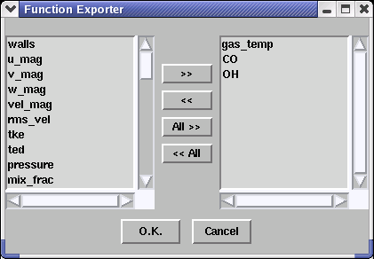
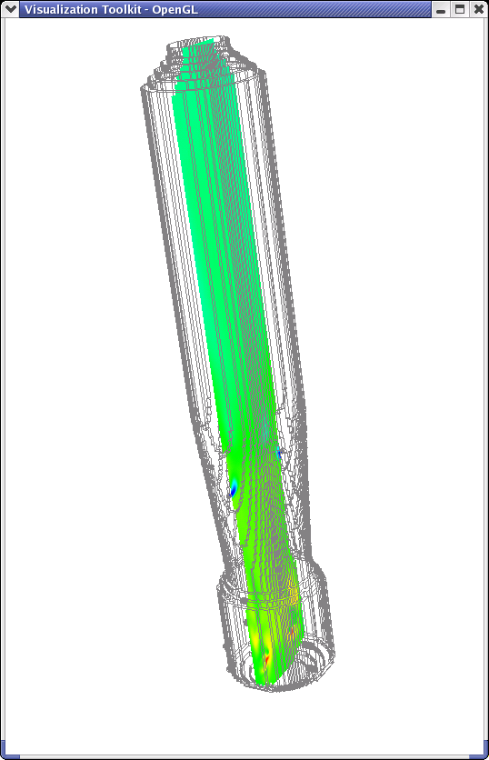
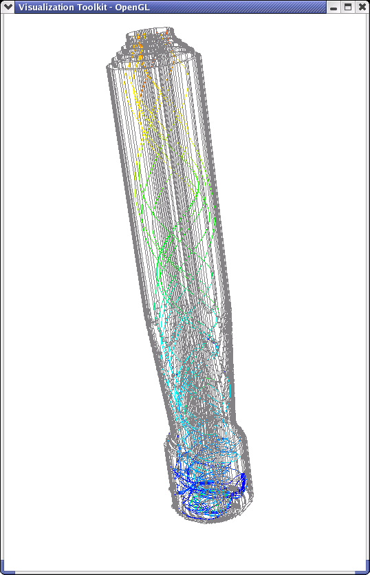
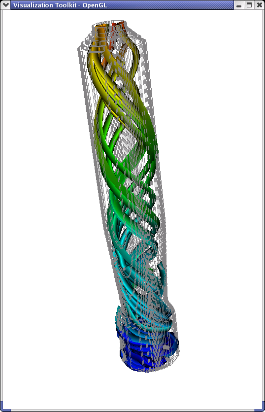
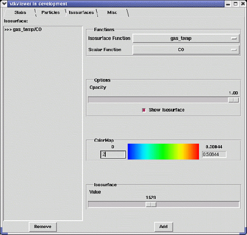
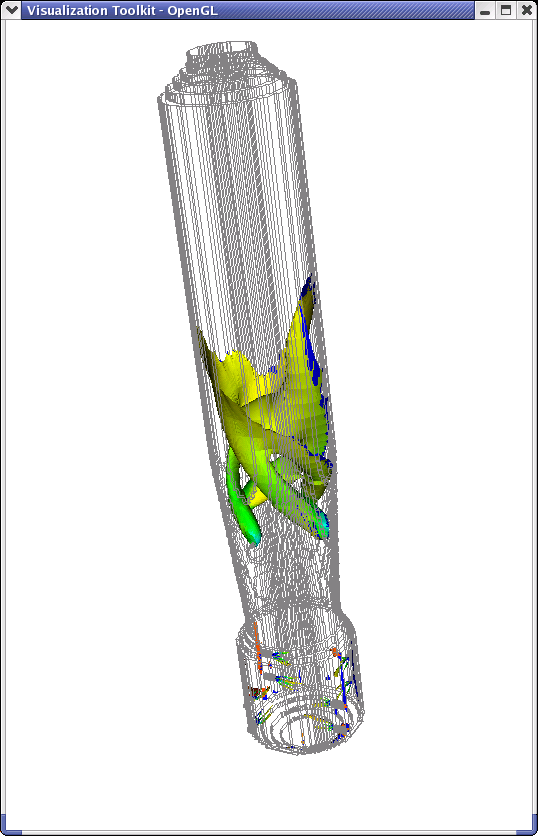
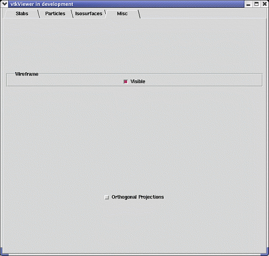

To enhance
data readability and usefulness, module output can be displayed using the VTK
Viewer. The viewer must first be installed, so for more information
on installing the VTK Viewer please refer to www.vtk.org
and click on the Get the Software
link. The viewer uses stored computational output to produce colored
3-dimensional representations of the results.
|
 |
Once the network has been executed and the module data has been properly stored, the user may then launch the DBconverter program to convert the simulation data. A selection screen first prompts the user to select which data should be exported to the viewer for display. The data categories shown on the right will later become selectable within the viewer. |
|
The second window is a user interface that allows the user to dictate the methods of data display. The first folder of the user interface, "slabs", is shown at the right. The first menu, Slab Type, specifies the type of "slab" to be projected. The Scalars option displays a two-dimensional cross-section using either a graduated scalar, mesh, or contoured display of data along the specified plane. The vectors option projects a 3D array of vectors, each originiating from a point along the cross-section. The Function menu controls the data source. The scalar option allows the user to select the desired data field to display. When the contoured scalar option is selected for the slab type, the Number of Contours option controls the detail of display. Similarly, the Vector Scale option allows the user to alter the magnitude of each vector in the array when the vector option is selected. The ColorMap field controls the way the slab is colored. The number on the left represents the data minimum (example shown at right: all gas temperatures less than 452 K will be shaded blue), the number on the right represents a data maximum (example shown at right: all temperatures above 3073 K will be shaded red), and all temperatures within the range will be scaled according to the color scheme shown. The Slab field specifies the location of the slab. The Dimension option controls which Cartesian plane the slab runs through, whereas the Location option determines the slab's location as measured from the outer extremes of the mesh. Once the desired slab options are specified, the Add button displays the slab (shown at left) in the display window. The active slab is then listed in the field on the left of the slab folder until removed by selecting the Remove button. |
|
Within the Particles folder the first menu field controls which particles are displayed. Two user-defined fields, Size and Location, control the properties of the modeled particles displayed in the display window. Selected sizes and locations are signified by an "X". The manner in which the particle paths are displayed is determined by the Options menu. Particle paths can either be displayed by a thin line or by a tube of user-specified size. The difference in appearance is illustrated by the two inset images. The ColorMap field controls the way the particle paths are colored. Again, the number on the left represents a minimum value, the number on the right a maximum, and the colors of the paths are scaled accordingly. The Function Type field represents a series of pre-defined ColorMap schemes.  |
|
The next folder, Isosurfaces, allows the user to create 3D contoured surfaces. The Isosurface Function controls how the isosurface is generated. The Scalar Function is a second data field that is then mapped onto the generated isosurface using the color scheme in MapColor (documented above). The example shown on the right would generate an isosurface where all temperatures were equal (1520 K) and would then use the color scheme to display CO levels at each point on that surface. The Options field allows the user to specify the desired opacity of the projected isosurface (0 being transparent and 1.00 being opaque.) The Isosurface Value is the value by which the contoured isosurface is created. For example, the specifications at right would generate an isosurface using all the points in the unit that have a temperature of 1520 K (shown below).  |
|
 |
The Miscellaneous folder allows the user to toggle the visibility of the wireframe and whether or not the display uses an orthogonal projection (display does not account for perspective). |